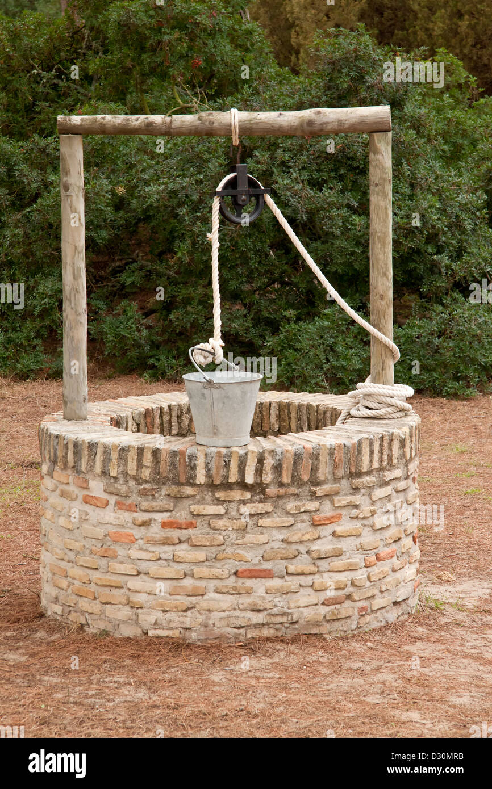

All about the Water
Homepage
Water comes from the sky
Water comes from the ground
Water comes from the faucet
Ingredients
How to make water - 3 ways
Method 1 - The Sky
- wait for grey cloud conditions
- wait for the smell of condensation
- open your hands and let the water fall in to them
Method 2 - The Well

- Locate a farm
- Locate a cylindrical stone architecture with a hole in the middle of it
- Locate a handle to lower the bucket
- Lower the bucket until you hear a crash and then raise the bucket
- When the bucket raised to the top, reach in with your hands and cup the water to your face
Method 3 - The Faucet
- locate any tyle of living establishment
- locate a room that may house kitchen supplies or a bathroom facility
- within the room, locate a sink basin. it will have a curvy pipe coming out the top
- locate a lever off to the side and move the lever in a direction where water will start flowing
- cup your hands under the water and bring to your dome